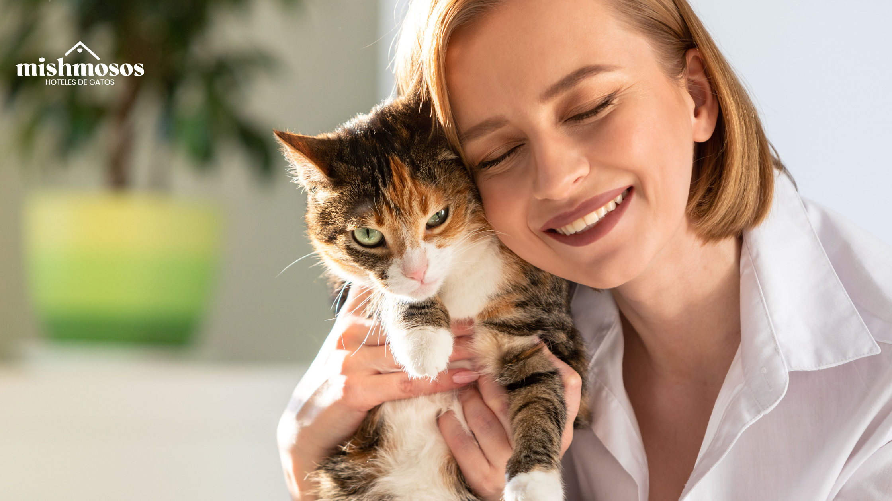

En Patitas Felices trabajamos con dedicación para rescatar, proteger y brindar bienestar a animales en situación de abandono, promoviendo la adopción responsable y creando
oportunidades para que cada mascota encuentre un hogar lleno de amor, cuidado y felicidad



En Patitas Felices nos dedicamos a rescatar, proteger y mejorar la calidad de vida de animales en situación de abandono o vulnerabilidad, promoviendo la adopción responsable, la educación en el cuidado animal y el respeto por todas las formas de vida. Trabajamos con amor y compromiso para brindarles una segunda oportunidad llena de bienestar y felicidad

Ser una fundación reconocida por su impacto positivo en la protección animal, logrando reducir el abandono y fomentando una cultura de respeto, adopción responsable y empatía, donde cada mascota tenga la oportunidad de vivir en un hogar seguro, amoroso y lleno de oportunidades